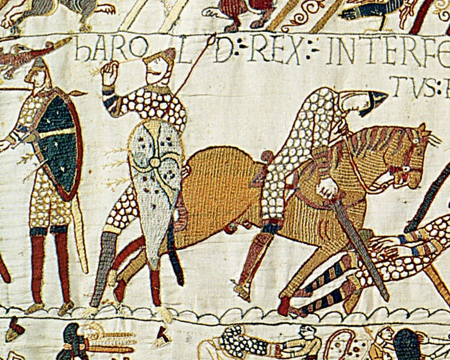

«Высшая проба» · Первый тур отборочного этапа · 9–10 классы
📅 25 September 2026 · Lesson 7
ДЕМОНСТРАЦИОННЫЙ ВАРИАНТ · АНГЛИЙСКИЙ ЯЗЫК · 9–10 КЛАССЫ
Время выполнения – 40 минут. Максимальное количество баллов – 100.
Фонетика (20) · Лексика (30) · Грамматика (30) · Лингвострановедение (20)
30 tasks. Your score stays locked 🔒 until every task has an answer.
In the real round you cannot go back to a question — try to work straight through.
40:00
Optional — the real round gives you 40 minutes for all four sections.
Tasks done: 0 / 30
Score unlocks at 30 / 30
Фонетика
Задания 1–10 · максимум 20 баллов
Задание 1 · 1 балл
Прослушайте аудиозапись и поставьте слова в том порядке, в котором вы их услышите.
thorough, though, thought, through
1st
2nd
3rd
4th
Задание 2 · 1 балл
Прослушайте аудиозапись и выберите те слова из списка, которые вы услышите. Четыре слова являются лишними.
Задание 3 · 4 балла
Прослушайте аудиозапись и соотнесите выделенные слова с их транскрипциями. Две транскрипции не соотносятся ни с одним словом.
1Be careful — that knife is very sharp.
2For dinner, Mum grilled some fresh salmon with lemon.
3The school choir performed at the charity concert.
4They spent the summer on a tiny Scottish island.
a/ˈsæmən/
b/naɪf/
c/ˈaɪlənd/
d/ˈsælmən/
e/ˈkwaɪə/
f/ˈtʃɔɪə/
Задание 4 · 4 балла
Выберите четыре слова в предложении, в которых есть звук /ʒ/.
Задание 5 · 1 балл
Прослушайте аудиозапись и выберите одно предложение, в котором нет связующего звука /r/.
Задание 6 · 4 балла
Соотнесите выделенные слова в предложениях с их звуковой схемой, где o – безударный слог, а O – ударный. Две звуковые схемы не соотносятся ни с одним словом.
1The magician’s best technique was making coins disappear.
2The flood was a catastrophe for the small farming town.
3The award ceremony will take place in the main hall.
4All our products come with a two-year guarantee.
aOooo
boO
cooOo
doOoo
eOo
fooO
Задание 7 · 1 балл
Прослушайте, как произносится слово. В каком из двух предложений оно используется именно в таком варианте звучания?
Задание 8 · 1 балл
Прочитайте диалог и выберите слово в выделенном предложении, на которое должно упасть логическое ударение.
Speaker A: So you’ve already sent the invitations by post?
Speaker B: Not by post; our printer broke down on Monday.
Click one word:
Задание 9 · 1 балл
Прослушайте предложение и определите, что на самом деле хочет сказать говорящий.
Задание 10 · 2 балла
Прослушайте аудиозапись и выберите два предложения, в которых используется нисходящий тон.
Лексика
Задания 11–18 · максимум 30 баллов
Задание 11 · 2 балла
В предложении найдите два слова с орфографической ошибкой.
Задание 12 · 4 балла
Используйте подходящие приставки, чтобы получить слова, лексически и грамматически подходящие в соответствующие пропуски в предложениях. Четыре приставки являются лишними.
1Our manager tends to [ESTIMATE] ______ how long tasks take, so we always miss our deadlines.
2Many of the ancient letters are [LEGIBLE] ______ because the ink has faded.
3The two schools decided to [OPERATE] ______ on a joint science project.
4Please [ACTIVATE] ______ the alarm before you open the back door.
apre-
bil-
cco-
dde-
eunder-
fir-
gmis-
hsub-
Задание 13 · 4 балла
Соотнесите слова, выделенные в предложениях, с наиболее близкими к ним по значению словами из списка.
1. Her candid reply surprised the interviewers.
2. Most of the equipment in the old lab is now obsolete.
3. He made a futile attempt to catch the last train.
4. The hikers were famished after the long climb.
Задание 14 · 4 балла
Для предложений 1-4 укажите одно слово, которое лексически соответствует содержанию конкретного предложения. Четыре слова являются лишними.
1The young scientist was awarded a ______ to continue her research.
2Before you sign, please read the terms and ______ carefully.
3The police have launched an ______ into the incident.
4In his speech, the headmaster paid ______ to the teacher who had retired.
atribute
brumour
cgrant
dexcuse
econditions
fhabit
ginvestigation
hremedy
Задание 15 · 4 балла
Для предложений 1-4 укажите одно слово, которое лексически соответствует содержанию конкретного предложения. Четыре слова являются лишними.
1It took the firefighters six hours to ______ the blaze under control.
2The new law will ______ into force next January.
3As the oldest pupil, Mark always tries to ______ an example for the younger ones.
4Please ______ a seat — the doctor will see you shortly.
aset
bmake
ccome
draise
etake
fdo
gbring
hpay
Задание 16 · 4 балла
Для предложений 1-4 укажите одно слово, которое лексически соответствует содержанию конкретного предложения. Четыре слова являются лишними.
1The forecast warns of ______ rain throughout the weekend.
2After the argument, there was an ______ silence in the room.
3I have a ______ memory of my first day at school — I remember every detail.
4Searching the whole forest before dark was a ______ task for the rescue team.
avivid
bthick
cheavy
dloud
eawkward
ftall
gdaunting
hwide
Задание 17 · 4 балла
Для предложений 1-4 укажите одно слово, которое лексически соответствует содержанию конкретного предложения. Четыре слова являются лишними.
1She was accused ______ stealing the documents.
2The success of the project depends ______ everyone’s cooperation.
3He apologised ______ being late for the third time this week.
4After three attempts, they finally succeeded ______ reaching the summit.
aat
bof
cwith
don
eabout
ffor
gin
hto
Задание 18 · 4 балла
Выберите предлоги, которые завершают фразовые глаголы в контексте. Четыре предлога являются лишними.
1The meeting was called ______ because the director was ill.
2I can hardly make ______ what he has written — his handwriting is terrible.
3I can’t put ______ with this noise any longer!
4Our car broke ______ on the motorway, so we were late.
aoff
bthrough
cout
dover
eup
faway
gdown
hacross
Грамматика
Задания 19–26 · максимум 30 баллов
Задание 19 · 4 балла
Заполните пропуски в предложениях нужным артиклем. (a(n) / the / ∅ – нулевой артикль)
1After a week of hiking in Alps, they spent two quiet days in Geneva.
2Last season she was elected captain of the school volleyball team.
3 Mr Jenkins phoned while you were out — does anyone here know somebody by that name?
4My brother has played violin in the city youth orchestra since he was nine.
Задание 20 · 4 балла
Соотнесите слово и способ, которым образуется множественное число данного слова. Один способ является лишним.
1crisis
2sheep
3advice
4goose
aДобавление окончания (e)s
bИзменение корня
cЗаимствованное (греческое/латинское) окончание
dФорма не меняется
eФормы множественного числа нет
Задание 21 · 4 балла
Расставьте прилагательные в правильном порядке в предложении.
Click the adjectives in order. Click a word in the gap to send it back.
Задание 22 · 4 балла
Для предложений 1-4 выберите глагол, который грамматически соответствует содержанию конкретного предложения. Два глагола являются лишними.
1By the time you arrive, we ______ dinner, so please don’t be late.
2He ______ the city marathon in under four hours last year.
3The film ______ by the time we got to the cinema, so we went for a pizza instead.
4My sister ______ all her homework, so now she can go out with her friends.
awill have finished
bfinished
chad finished
dwas finishing
ehas finished
fis finished
Задание 23 · 4 балла
Соотнесите модальные конструкции, выделенные в предложениях, со значением, которое они выражают. Одно значение является лишним.
1You mustn’t use your phone during the exam.
2You needn’t have bought any milk — we already had two bottles in the fridge.
3Despite the storm, the crew were able to reach the shore.
4You ought to see a doctor about that cough.
aadvice
bprohibition
can unnecessary past action
dability in a specific past situation
estrong certainty about the present
Задание 24 · 4 балла
Соедините начало каждого предложения (1–4) с подходящим окончанием (a–e), чтобы получились грамматически верные и логичные высказывания. Одно окончание является лишним.
1The teacher made us
2She can’t help
3We were made
4The suspect was last seen
arewrite the whole essay from scratch.
bto wait outside for over an hour.
cthat the answer was correct.
dlaughing whenever she watches that video.
eleaving the railway station at midnight.
Задание 25 · 4 балла
Прочитайте исходное предложение и выберите один вариант, который передает тот же смысл с помощью условного предложения.
1. I didn’t set an alarm, so I overslept.
2. I’m not tall enough, so I can’t reach the top shelf.
3. She didn’t study medicine, so she isn’t a doctor now.
4. Whenever you heat ice, it melts.
Задание 26 · 2 балла
Расставьте слова в правильном порядке. В задании есть лишние слова.
Click the words in order. Click a word in the gap to send it back.
1. Direct speech: “Have you ever been to Japan?” Tom asked me.
2. Direct speech: “Don’t touch the paintings,” the guide said to us.
Лингвострановедение
Задания 27–30 · максимум 20 баллов
Задание 27 · 5 баллов
Соотнесите изображение и событие, которое на нем представлено. Два события не соотносятся ни с одним из изображений.
1
2

3
4
5
aThe Boston Tea Party
bThe Battle of Hastings
cThe Defeat of the Spanish Armada
dThe Battle of Bosworth Field
eThe Blitz
fWashington Crossing the Delaware
gThe Battle of Trafalgar
Задание 28 · 5 баллов
Соотнесите автора и произведение, которое он написал. Два произведения не соотносятся ни с одним из авторов.
1Charles Dickens
2Jane Austen
3Arthur Conan Doyle
4Harper Lee
5J. R. R. Tolkien
aThe Hobbit
bFrankenstein
cOliver Twist
dThe Hound of the Baskervilles
eThe Great Gatsby
fPride and Prejudice
gTo Kill a Mockingbird
Задание 29 · 5 баллов
Сопоставьте имена выдающихся людей и связанные с ними события, открытия, направления деятельности.
1Became the first woman to fly solo across the Atlantic Ocean.
2Reformed hospital care during the Crimean War and became known as “the Lady with the Lamp”.
3Invented the World Wide Web while working at CERN.
4Led the Montgomery bus boycott and gave the famous “I Have a Dream” speech.
5Discovered penicillin by accident in 1928.
aTim Berners-Lee
bAlexander Fleming
cAmelia Earhart
dMartin Luther King Jr.
eFlorence Nightingale
Задание 30 · 5 баллов
Прочитайте текст и заполните пропуски подходящими по смыслу идиомами из списка. Две идиомы в списке не подходят ни в один пропуск.
When Jake was invited to join the school robotics team for the national competition, he nearly
(1)
— he had never built anything more complicated than a model plane. But his teammate Lily
persuaded him to give it a try. A week before the competition their robot stopped working
completely, and the team felt they were
(2) .
Jake wanted to
(3) ,
but Lily wouldn’t hear of it, so they decided to
(4) ,
staying in the lab late every evening. In the end, all their hard work paid off: the robot passed
the final test
(5)
and the team won first prize.
aa piece of cake
bback to square one
cburn the midnight oil
dgot cold feet
ethrow in the towel
fthe icing on the cake
gwith flying colours
🔒
Your score is locked
Finish every task first — then the score appears and all the answers are revealed.
Nothing is marked before that, so make a sensible guess rather than leaving gaps!
Ready
All 30 tasks are answered. 🎉
Press the button when you want to see how you did. After this, every answer on the page
is marked, the correct answers are shown and nothing can be changed.
Result
0 / 100
🔊 Фонетика (Задания 1–10)0 / 20
📚 Лексика (Задания 11–18)0 / 30
⚙️ Грамматика (Задания 19–26)0 / 30
🌍 Лингвострановедение (Задания 27–30)0 / 20
Go back through the four tabs: green = correct, red = wrong, and the green tag next to an
answer shows what was expected. Write down every task you lost points on — that list is
your revision plan for the real first round.
🎧 Audio script (Задания 1, 2, 3, 5, 7, 9, 10)
Задание 1: thought – through – thorough – though
Задание 2: When my grandparents moved to a small village, they found it hard to adapt at first.
Life there was so quiet that they almost missed the noise of the city. But soon they discovered a lovely
local custom: every Friday the whole village gathers for dinner in the square. Now they say they would
hate to lose that sense of community.
Задание 3: 1) …that knife /naɪf/… 2) …fresh salmon /ˈsæmən/… 3) The school choir /ˈkwaɪə/… 4) …a tiny Scottish island /ˈaɪlənd/.
Задание 5: 1. Their answer appeared in the newspaper on Monday. 2. The engineer admitted that the plan had failed.
3. My brother’s favourite teacher retired last spring. (no linking /r/) 4. Four of us stayed after the meeting to help.
Задание 7: object /ˈɒbdʒɪkt/ — the noun, stress on the first syllable
Задание 9: A: By the way, the results of the contest came out this morning. — B: They’ve ↗come out? (rising: surprise, checking what was just heard)
Задание 10:1. Where did you leave my umbrella? ↘ 2. Did you remember to lock the door? ↗
3. What a wonderful surprise! ↘ 4. Are you ready to order? ↗
📤 Send your results to your teacher
This makes a short report with your score and every answer you gave, so your teacher can
go through your mistakes with you.